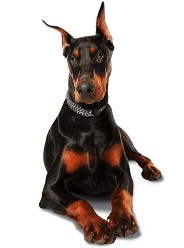

Породы собак

Доберман
— порода короткошёрстных служебных собак, выведенная в городе Апольда(Германия)
Золотистый ретривер
— порода охотничьих собак, выведенная в Великобритании
Сибирский хаски
— заводская специализированная порода собак, выведенная чукчами северо-восточной части Сибири
Сиба-ину, или сиба-кэн
— порода охотничьих собак, выведенная на японском острове Хонсю
Бордер-колли
— порода пастушьих собак, выведенная на границе Шотландии и Англии